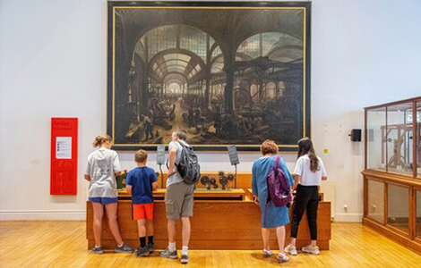
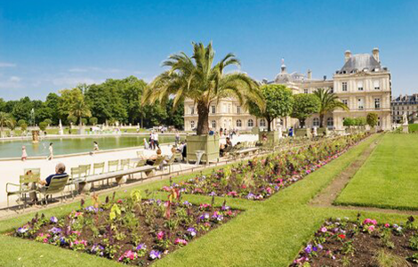
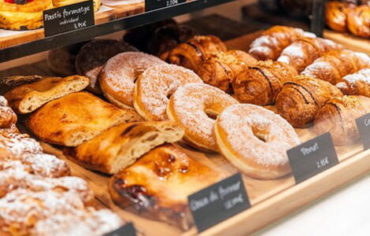
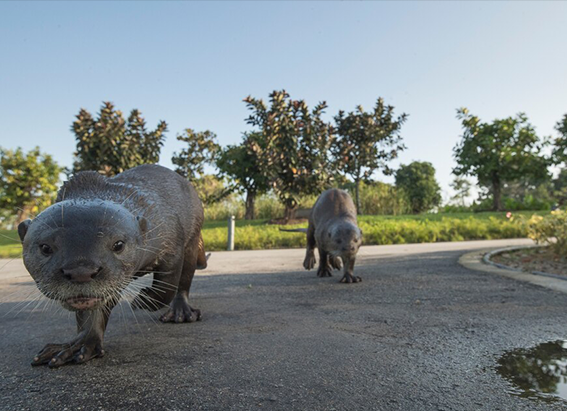
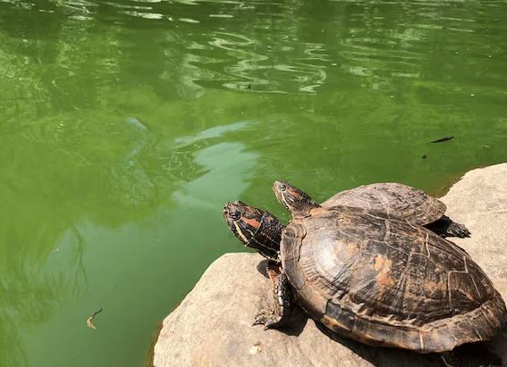
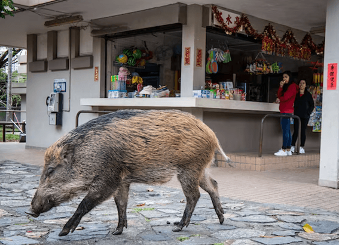

NATIONAL GEOGRAPHIC
A family city guide to Paris
TRAVEL
- 
- 
- 
Dogs in handbags, whimsical fountains, rogue Statues of Liberty and cakes like jewels. Paris mesmerises all ages with its sights, sounds and spectacles. Introducing the kids to the Mona Lisa or scampering up the Eiffel Tower are bucket-list highlights. But there’s also an inherent charm in walking through neighbourhood parks and elegant tree-shaded boulevards, marvelling at magical window displays, scoffing sugar-dusted crepes on a cafe pavement terrace and catching street performers on bridges across the Seine.
The French capital is easily walkable, with a family-friendly fleet of hop-on-hop-off river boats, open-top buses and bikes to save tired legs. On the metro, families can pretend they're train drivers as they whoosh through the tunnels in the front carriage of automated lines one and 14, or watch city life unfold on Parisian streets from overhead lines two and six.
What to do in Paris with kids
Toddlers: Explore Paris’s art heritage through play at the kid-focused Musée en Herbe, a five-minute walk from the Louvre. Seasonal exhibitions include rainbow coloured tunnels, mirror illusions and other interactive elements, and the museum also runs one-hour art workshops.
Young children may be fascinated by the marionette puppet show at the Jardin d’Acclimatation, an amusement park in the enormous Bois de Boulogne woodland on central Paris’s western fringe, with old-school carousels, playgrounds and funfair attractions. There are also walking trails perfect for pushchairs, and the splash pool and water misters are a godsend on hot summer days.
Northern Paris’s wildly popular science museum, Cité des Sciences et de l’Industrie, is also likely to be a hit with curious children; its ‘build, explore, experiment’ play sessions are aimed at two- to seven-year-olds. Book online well in advance and take a picnic to enjoy afterwards in the surrounding Parc de la Villette, with multiple playgrounds and other attractions for children.
A sunny day in a park with a lake
Children under 10: So much of Parisian life revolves around its green spaces and the historic Jardin du Luxembourg is one of the city’s grandest. Chasing vintage toy sailing boats with a stick around the ornamental pond has long been a boisterous family activity. Fans of New York’s Statue of Liberty can use the gardens as a starting point for a treasure hunt to find Paris’s five replicas, one of which is here.
Climbing the Eiffel Tower is justifiably one of Paris’s most popular family attractions. Book your online ticket carefully to ensure the most appropriate stair lift combo for you and the kids it’s 674 steps or a lift to the second floor, from where a final obligatory lift whisks everyone to the top. Assuming bedtimes allow, consider an evening visit when crowds thin out and sunset spins its magic.
On a rainy day, young inventors will enjoy sheltering in Le Marais’ Musée des Arts et des Métiers, an 18th-century museum of technological gadgetry. Rent the kids’ audio-guides to learn about its fascinating wacky inventions with an English speaking robot.
Tweens and teenagers: While it’s not recommended for under 13s, the macabre Catacombes where 18th-century Paris laid its dead to rest in subterranean tunnels is usually a big hit with older teens. Self-guided tours take the almost mile-long circuit winding past bones and tomb markers deep underground; book online seven days in advance for the best chance of getting tickets.
While the Cathédrale Notre-Dame isn’t reopening until December 2024, the Éternelle Notre-Dame experience now installed under the cathedral's forecourt has proved a huge hit with teens. Participants don a backpack and virtual-reality headset, to be transported up to the roof of the cathedral where they can admire its rose window up close and learn about its 850 years of history.
The free FlashInvader app is another good option for teens, sending families all over Paris on hunts to find pixelated ceramic mosaics by anonymous French street artist Invader. There are around 1,500 to find and flash for points; the highest piece of pixel art is at the top of the Eiffel Tower.
Comments :
- john Very good
- john Very good
Leave a Reply
Your email address will not be published. Required fields are marked*
Related posts:
-
Cheeky otters are thriving in Singapore and adapting quickly to big city life
SINGAPOREOn a grassy strip along the highway, a blur of brown fur moves quickly, a small head popping up every so often to check for danger. It’s a family of seven otters, likely on their way to their den at the Singapore Botanic Gardens.
View article -
New York City has a turtle problem
NEW YORK CITYBright green and viscous, Morningside Pond looks like a vat of unappealing pea soup. Styrofoam cups and plastic bags cling to the pond’s edge, bound in place by bubbles of green foam.
View article -
Wild boars make a home amid Hong Kong’s high rises and highways
HONG KONGOn a Wednesday morning in one of Hong Kong’s high-end residential areas, a large wild boar napped peacefully on the side of a road. It was seemingly oblivious to the rush hour traffic whizzing past mere feet away
View article